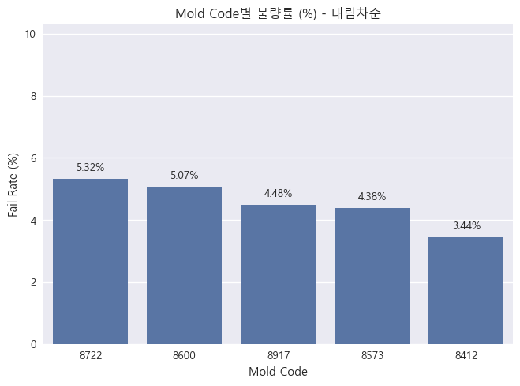
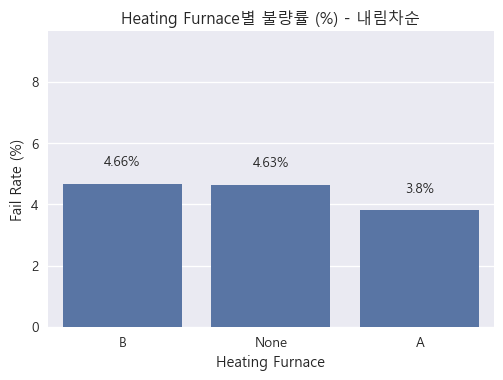

shift 컬럼 생성 완료 (Day/Night)
최종 데이터셋 컬럼 수: 32
최종 데이터셋 예시:
datetime count shift real_time speed_ratio \
0 2019-01-02 16:45:06 258 Day 16:45:06 2019-01-02 0.982143
1 2019-01-02 16:45:08 243 Day 16:45:08 2019-01-02 1.000000
2 2019-01-02 16:45:58 244 Day 16:45:58 2019-01-02 1.000000
3 2019-01-02 16:48:03 245 Day 16:48:03 2019-01-02 1.027523
4 2019-01-02 16:50:08 246 Day 16:50:08 2019-01-02 0.990909
5 2019-01-02 16:52:13 247 Day 16:52:13 2019-01-02 1.000000
6 2019-01-02 16:55:18 248 Day 16:55:18 2019-01-02 0.981982
7 2019-01-02 16:57:20 249 Day 16:57:20 2019-01-02 1.018519
8 2019-01-02 16:59:28 250 Day 16:59:28 2019-01-02 0.981982
9 2019-01-02 17:01:27 251 Day 17:01:27 2019-01-02 1.027778
pressure_speed_ratio
0 2.955357
1 2.834862
2 2.834862
3 2.825688
4 2.809091
5 2.800000
6 2.774775
7 2.861111
8 2.792793
9 2.851852
train.loc[:,[‘datetime’, ‘shift’]]
2.5 데이터 전처리
molten_temp
Code
import pandas as pdimport seaborn as snsimport matplotlib.pyplot as pltimport matplotlib.patches as patches# OS에 맞게 폰트 설정 (Windows 기준: Malgun Gothic)plt.rcParams['font.family'] ='Malgun Gothic'plt.rcParams['axes.unicode_minus'] =False# 데이터 로드df = pd.read_csv('./data/train.csv')train = df.copy()# =======================# 1. Molten Temperature# =======================print("[Molten Temperature - 용융 온도]")print("""금속이 용융된 후 주입되는 시점의 센서 측정 온도를 나타냅니다.""")# ---------------------------------# 1. 시각화: 분포 확인 -> Boxplot (불량/양품 비교)# ---------------------------------# 600℃ 이상 데이터만 추출train_over600 = train[train['molten_temp'] >=600]# 양품(0)과 불량(1) 데이터 분리good = train_over600[train_over600['passorfail'] ==0]['molten_temp']bad = train_over600[train_over600['passorfail'] ==1]['molten_temp']# 최소/최대 값 계산good_min, good_max = good.min(), good.max()bad_min, bad_max = bad.min(), bad.max()# 출력print(f"""양품(0)과 불량(1)의 분포 차이를 비교하여 온도 기준이 품질에 미치는 영향을 확인할 수 있습니다.600℃ 이하에서는 공정 에러일 확률이 높아 알람 조건으로 활용할 수 있습니다.600℃ 이상에서는 양품의 경우 최소 {good_min:.1f}℃, 최대 {good_max:.1f}℃의 범위 값을 가지고,불량의 경우 최소 {bad_min:.1f}℃, 최대 {bad_max:.1f}℃의 범위 값을 가지는 것을 확인하였습니다.""")# Subplot 설정fig, axes = plt.subplots(1, 2, figsize=(12, 5), sharey=False)# (1.) 전체 데이터 박스플롯 (600℃ 이상 영역 강조)sns.boxplot(x='passorfail', y='molten_temp', data=train, ax=axes[0])axes[0].set_title("Molten Temperature (전체 데이터)")axes[0].set_xlabel("Pass/Fail")axes[0].set_ylabel("Molten Temperature (℃)")axes[1].set_ylim(-5, 750) # y축 600부터 시작axes[0].grid(axis='y', linestyle='--', alpha=0.7)# 600℃ 이하 영역 강조rect_error = patches.Rectangle( (-0.5, axes[0].get_ylim()[0]), # x 시작, y축 최솟값2.0, # 너비 (passorfail 0과 1 포함)600- axes[0].get_ylim()[0], # 높이: y축 최솟값 ~ 600 linewidth=1, edgecolor='red', facecolor='red', alpha=0.2, label='공정 에러 알람')axes[0].add_patch(rect_error)# 텍스트 추가axes[0].text( x=0.5, # x 위치 (양품/불량 중앙) y=axes[0].get_ylim()[0] + (600- axes[0].get_ylim()[0])/2, # y 중앙 s="공정 에러 알람", color='red', ha='center', va='center', fontsize=10, fontweight='bold')# (2.) 600℃ 이상 데이터만 박스플롯 (Zoom-in)sns.boxplot(x='passorfail', y='molten_temp', data=train_over600, ax=axes[1])axes[1].set_title("Molten Temperature (600℃ 이상 데이터)")axes[1].set_xlabel("Pass/Fail")axes[1].set_ylabel("")axes[1].set_ylim(600, 750) # y축 600부터 시작axes[1].grid(axis='y', linestyle='--', alpha=0.7)# 레이아웃 정리plt.tight_layout()plt.show()# ---------------------------------# 2. 결측치 처리 (최빈값으로 대체) + 라벨 생성 (600도 기준)# ---------------------------------mode_temp = train['molten_temp'].mode()[0]train['molten_temp'] = train['molten_temp'].fillna(mode_temp)print(f"molten_temp 결측치 처리: 최빈값 {mode_temp}로 대체")train['molten_temp_label'] = (train['molten_temp'] >=600).astype(int)print("라벨 생성: molten_temp >= 600 → 1(양품), < 600 → 0(불량)\n")
[Molten Temperature - 용융 온도]
금속이 용융된 후 주입되는 시점의 센서 측정 온도를 나타냅니다.
양품(0)과 불량(1)의 분포 차이를 비교하여 온도 기준이 품질에 미치는 영향을 확인할 수 있습니다.
600℃ 이하에서는 공정 에러일 확률이 높아 알람 조건으로 활용할 수 있습니다.
600℃ 이상에서는 양품의 경우 최소 626.0℃, 최대 735.0℃의 범위 값을 가지고,
불량의 경우 최소 660.0℃, 최대 735.0℃의 범위 값을 가지는 것을 확인하였습니다.
print("[Mold Code - 금형 코드]")print("주조 시 사용된 금형을 나타내며, 금형별 특성 차이가 불량률에 영향을 줄 수 있습니다.")# 시각화# mold_code를 문자형으로 변환train['mold_code'] = train['mold_code'].astype(str)# mold_code별 불량률(%) 계산mold_fail_rate = ( train.groupby("mold_code")["passorfail"] .agg(lambda x: (x.sum() /len(x)) *100) # 불량률 % 변환 .reset_index())mold_fail_rate = mold_fail_rate.rename(columns={'passorfail': 'fail_rate'}).round(2)# 최대/최소 불량률 찾기max_row = mold_fail_rate.loc[mold_fail_rate['fail_rate'].idxmax()]min_row = mold_fail_rate.loc[mold_fail_rate['fail_rate'].idxmin()]# 평균 불량률 계산avg_rate = mold_fail_rate['fail_rate'].mean().round(2)# 설명 출력print("""금형 코드를 기준으로 각 금형을 사용하였을 때 불량률을 비교하였습니다.불량률이 높을수록 해당 금형에서 발생하는 품질 문제가 많음을 의미합니다.전체 금형에서 평균 불량률은 {avg_rate:.2f}%로 나타났으며,그 중 '{max_code}' 금형 사용 시 {max_rate:.2f}%로 최대 불량률이 발생하고,'{min_code}' 금형 사용 시 {min_rate:.2f}%로 최소 불량률이 발생하는 것으로 확인되었습니다.""".format( avg_rate=avg_rate, max_rate=max_row['fail_rate'], max_code=max_row['mold_code'], min_rate=min_row['fail_rate'], min_code=min_row['mold_code'], ))# mold_code별 불량률(%) 계산mold_fail_rate = ( train.groupby("mold_code")["passorfail"] .agg(lambda x: (x.sum() /len(x)) *100) # 불량률 % 변환 .reset_index())mold_fail_rate = mold_fail_rate.rename(columns={'passorfail': 'fail_rate'}).round(2)# 내림차순 정렬mold_fail_rate = mold_fail_rate.sort_values(by="fail_rate", ascending=False).reset_index(drop=True)# 시각화ax = sns.barplot( data=mold_fail_rate, x="mold_code", y="fail_rate", errorbar=None, # ✅ ci=None → errorbar=None 으로 수정 order=mold_fail_rate["mold_code"], # 정렬된 순서 반영)# 타이틀 & 라벨plt.title("Mold Code별 불량률 (%) - 내림차순")plt.xlabel("Mold Code")plt.ylabel("Fail Rate (%)")# 각 바 위에 값 표시 (소수 둘째자리, 굵은 글씨)for p in ax.patches: value =round(p.get_height(), 2) ax.text( p.get_x() + p.get_width() /2, # x 위치 (바 가운데) p.get_height() +0.2, # y 위치 (바 위쪽)f"{value}%", # % 표시 ha="center", va="bottom", # fontweight="bold" )# y축 범위 조정 (여유 공간 확보)plt.ylim(0, mold_fail_rate["fail_rate"].max() +5)plt.show()# 데이터 처리# 원-핫 인코딩 (One-Hot Encoding)mold_dummies = pd.get_dummies(train['mold_code'], prefix='mold')train = pd.concat([train, mold_dummies], axis=1)# 확인print("Mold Code 데이터 처리: 원-핫 인코딩 진행, 결측치 없음")
[Mold Code - 금형 코드]
주조 시 사용된 금형을 나타내며, 금형별 특성 차이가 불량률에 영향을 줄 수 있습니다.
금형 코드를 기준으로 각 금형을 사용하였을 때 불량률을 비교하였습니다.
불량률이 높을수록 해당 금형에서 발생하는 품질 문제가 많음을 의미합니다.
전체 금형에서 평균 불량률은 4.54%로 나타났으며,
그 중 '8722' 금형 사용 시 5.32%로 최대 불량률이 발생하고,
'8412' 금형 사용 시 3.44%로 최소 불량률이 발생하는 것으로 확인되었습니다.

Mold Code 데이터 처리: 원-핫 인코딩 진행, 결측치 없음
Heating Furnace
Code
print("""[Mold Code - 가열로]""")print("[Heating Furnace - 가열로]")print("""금속을 용해 후 주입 전까지 일정 온도로 유지하는 가열로입니다.A, B 두 종류가 존재하며, 측정되지 않은 데이터는 결측치로 존재할 수 있습니다.이는 주조 품질에 영향을 미치는 주요 공정 요소 중 하나입니다.""")# Heating Furnace별 불량률 계산 (백분율)# 결측치는 이후 None으로 처리train['heating_furnace'] = train['heating_furnace'].fillna('None')furnace_fail_rate = ( train.groupby("heating_furnace")["passorfail"] .agg(lambda x: (x.sum() /len(x)) *100) # 불량률 % 계산 .reset_index())furnace_fail_rate = furnace_fail_rate.rename(columns={'passorfail': 'fail_rate'}).round(2)# 내림차순 정렬furnace_fail_rate = furnace_fail_rate.sort_values(by="fail_rate", ascending=False).reset_index(drop=True)# 최대/최소/평균 불량률 계산max_row = furnace_fail_rate.loc[furnace_fail_rate['fail_rate'].idxmax()]min_row = furnace_fail_rate.loc[furnace_fail_rate['fail_rate'].idxmin()]avg_rate = furnace_fail_rate['fail_rate'].mean().round(2)print(f"""Heating Furnace별 불량률을 비교하였습니다.불량률이 높을수록 해당 가열로에서 발생하는 품질 문제가 많음을 의미합니다.전체 가열로에서 평균 불량률은 {avg_rate:.2f}%로 나타났으며,그 중 '{max_row['heating_furnace']}' 가열로 사용 시 {max_row['fail_rate']:.2f}%로 최대 불량률이 발생하고,'{min_row['heating_furnace']}' 가열로 사용 시 {min_row['fail_rate']:.2f}%로 최소 불량률이 발생하는 것으로 확인되었습니다.""")# Barplot 시각화plt.figure(figsize=(6,4))ax = sns.barplot( data=furnace_fail_rate, x="heating_furnace", y="fail_rate", errorbar=None, # ci=None 대신 최신 버전 대응 order=furnace_fail_rate["heating_furnace"])# 타이틀 & 라벨plt.title("Heating Furnace별 불량률 (%) - 내림차순")plt.xlabel("Heating Furnace")plt.ylabel("Fail Rate (%)")# 각 바 위에 값 표시 (소수 둘째자리, 굵은 글씨)for p in ax.patches: value =round(p.get_height(), 2) ax.text( p.get_x() + p.get_width() /2, p.get_height() +0.5,f"{value}%", ha="center", va="bottom", )# y축 범위 설정 (여유 공간 확보)plt.ylim(0, furnace_fail_rate["fail_rate"].max() +5)plt.show()# 결측치 처리# 결측치는 'None'으로 대체하고 원-핫 인코딩train['heating_furnace'] = train['heating_furnace'].fillna('None')furnace_dummies = pd.get_dummies(train['heating_furnace'], prefix='furnace')train = pd.concat([train, furnace_dummies], axis=1)print("heating furnace 데이터 처리: 결측치는 'None'으로 처리 후 원-핫 인코딩 진행")
[Mold Code - 가열로]
[Heating Furnace - 가열로]
금속을 용해 후 주입 전까지 일정 온도로 유지하는 가열로입니다.
A, B 두 종류가 존재하며, 측정되지 않은 데이터는 결측치로 존재할 수 있습니다.
이는 주조 품질에 영향을 미치는 주요 공정 요소 중 하나입니다.
Heating Furnace별 불량률을 비교하였습니다.
불량률이 높을수록 해당 가열로에서 발생하는 품질 문제가 많음을 의미합니다.
전체 가열로에서 평균 불량률은 4.36%로 나타났으며,
그 중 'B' 가열로 사용 시 4.66%로 최대 불량률이 발생하고,
'A' 가열로 사용 시 3.80%로 최소 불량률이 발생하는 것으로 확인되었습니다.

heating furnace 데이터 처리: 결측치는 'None'으로 처리 후 원-핫 인코딩 진행
Source Code
---title: "다이캐스팅 제조 공정 데이터 탐색적 분석 (EDA)"subtitle: "Casting Defect Prediction & Process Insight"author: "Data Analysis Team"date: todayformat: html: theme: cosmo # 기본 테마 toc: true # 목차 표시 toc-title: "Contents" # 목차 제목 toc-location: right # 목차 오른쪽 고정 toc-float: true # 스크롤 시 따라다니기 toc-depth: 3 # 목차 깊이 code-fold: true # 코드 접기/펼치기 버튼 code-tools: true # 코드 툴바(실행/복사) 활성화 code-copy: true # 복사 버튼 css: styles.css # 추가 디자인 적용용 CSS 연결execute: echo: true # 코드 출력 여부 warning: false # 경고 숨김 error: false # 오류 숨김 cache: false # 캐시 사용 X---# 1. 프로젝트 개요## 1.1 목적본 프로젝트는 **다이캐스팅 제조 공정 데이터**를 분석하여 제품 불량(`passorfail=0`) 발생 원인을 탐색하고, 품질 향상 및 스마트팩토리 기반 **예측 모델링**의 기초를 마련하는 것을 목적으로 합니다. ## 1.2 프로젝트 의의- **공정 품질 관리**: 불량 발생 가능성이 높은 공정 조건을 사전 탐지 - **데이터 기반 개선**: 감이 아닌 데이터 분석을 통한 의사결정 지원 - **자동화 가능성**: 추후 머신러닝 기반 불량 예측 시스템 구축 기반 ---# 2. 데이터 개요## 2.1 데이터셋 정보- **train.csv**: 73,612행, 32열 (학습 데이터) - **test.csv**: 18,403행, 31열 (테스트 데이터) - **목표 변수**: `passorfail` (0=불량, 1=합격) ---## 2.2 주요 변수 설명 (예시 포함)### 기본 정보- `id`: 고유 번호 (예: 0, 1, 2 …) - `line`: 생산 라인 이름 (예: 전자교반 3라인 2호기) - `name`: 장비 이름 (예: TM Carrier RH) - `mold_name`: 금형 이름 (예: TM Carrier RH-Semi-Solid DIE-06) - `date`: 측정 날짜 (예: 2019-01-02) - `time`: 측정 시간 (예: 16:45:06) ### 공정 상태- `count`: 누적 제품 개수 (예: 258, 243, 244 …) - `working`: 장비 가동 여부 (예: 가동, 정지) - `emergency_stop`: 비상 정지 여부 (예: ON, OFF) - `registration_time`: 데이터 등록 시각 (예: 2019-01-02 16:45) - `tryshot_signal`: 측정 딜레이 여부 (예: 공백 또는 신호 값) ### 용탕 단계- `molten_temp`: 용탕 온도 (예: 731, 720, 722 …) - `heating_furnace`: 용해로 코드 (예: A, B, None) ### 충진 단계- `sleeve_temperature`: 주입 관 온도 (예: 550, 481 …) - `EMS_operation_time`: 전자 교반 시간 (예: 23, 25 …) - `low_section_speed`: 저속 주입 속도 (예: 110, 109, 112 …) - `high_section_speed`: 고속 주입 속도 (예: 112, 125, 123 …) - `mold_code`: 금형 코드 (예: 8722, 8412, B …) - `molten_volume`: 주입 금속 양 (예: 75, 309 …) - `cast_pressure`: 주입 압력 (예: 331, 309, 308 …) ### 냉각 단계- `upper_mold_temp1`: 상부1 금형 온도 (예: 198, 250 …) - `upper_mold_temp2`: 상부2 금형 온도 (예: 116, 113 …) - `upper_mold_temp3`: 상부3 금형 온도 (예: 1449, 122 …) - `lower_mold_temp1`: 하부1 금형 온도 (예: 234, 211 …) - `lower_mold_temp2`: 하부2 금형 온도 (예: 316, 179 …) - `lower_mold_temp3`: 하부3 금형 온도 (예: 1449, 208 …) - `Coolant_temperature`: 냉각수 온도 (예: 34, 30 …) ### 공정 속도- `facility_operation_cycleTime`: 전체 설비 사이클 시간 (예: 119, 98, 100 …) - `production_cycletime`: 실제 생산 사이클 시간 (예: 120, 125, 123 …) ### 품질 및 성능- `biscuit_thickness`: 주조물 두께 (예: 35, 48, 49 …) - `physical_strength`: 제품 강도 (예: 700, 0 …) ### 평가- `passorfail`: 합격 여부 (예: 0=불량, 1=합격) ## 2.3 데이터 로딩 및 기본 확인분석에 필요한 라이브러리를 불러오고 데이터를 읽어옵니다. ```{python}# 필수 라이브러리 불러오기import pandas as pdimport numpy as npimport matplotlib.pyplot as pltimport seaborn as snsfrom sklearn.preprocessing import StandardScalerimport warningswarnings.filterwarnings('ignore')# 그래프 한글 깨짐 방지plt.rcParams['font.family'] ='Malgun Gothic'plt.rcParams['axes.unicode_minus'] =Falseplt.style.use('seaborn-v0_8')# 데이터 로딩train = pd.read_csv("./data/train.csv")test = pd.read_csv("./data/test.csv")print("예시 데이터: ", train.head(3))print("Train 데이터 크기:", train.shape)print("Test 데이터 크기:", test.shape)print("\n컬럼 리스트:\n", list(train.columns))print("\n결측치 개수:\n", train.isna().sum())```## 2.4 데이터 전처리 및 파생 변수 생성컬럼에 유니크 값이 1개인 경우 컬럼을 제거합니다.```{python}print(train.value_counts())```데이터 분석과 모델링을 위해 불필요한 컬럼을 제거하고, 공정 특성을 잘 드러낼 수 있는 새로운 변수를 생성합니다.```{python}# 데이터 전처리 및 파생변수 생성# datetime & hour 생성train['datetime'] = pd.to_datetime(train['date'] +" "+ train['time'])train['hour'] = train['datetime'].dt.hour# shift (Day/Night 교대조) 생성first_hour = train.loc[0, 'hour']if8<= first_hour <=19: # 08:00 ~ 19:59 → Day current_shift ="Day"else: # 20:00 ~ 07:59 → Night current_shift ="Night"shifts = []for i inrange(len(train)):if i ==0: shifts.append(current_shift)continueif train.loc[i, 'count'] < train.loc[i-1, 'count']: # count 감소 → 리셋 h = train.loc[i, 'hour']if (8<= h <=19and current_shift =="Night") or (h >=20or h <8and current_shift =="Day"): current_shift ="Night"if current_shift =="Day"else"Day" shifts.append(current_shift)train['shift'] = shiftsprint("shift 컬럼 생성 완료 (Day/Night)")train = train.sort_values(by="datetime").reset_index(drop=True)# ------------------------------# 1) 글로벌 누적 count (전체 기간)# ------------------------------global_counts = []accum =0prev_count = train.loc[0, 'count']for i, row in train.iterrows(): current_count = row['count']# count가 리셋된 경우if current_count < prev_count: accum += prev_count # 지금까지 생산량을 누적 global_counts.append(accum + current_count) prev_count = current_counttrain['global_count'] = global_counts# ------------------------------# 2) 월별 누적 count# ------------------------------train['year_month'] = train['datetime'].dt.to_period("M") # 연-월 단위train['monthly_count'] = train.groupby('year_month').cumcount() +1# 파생 변수 생성train['real_time'] = train['date'] +" "+ train['time']train['speed_ratio'] = train['low_section_speed'] / train['high_section_speed']train['pressure_speed_ratio'] = train['cast_pressure'] / train['high_section_speed']# 불필요한 컬럼 제거drop_columns = [ 'id', 'line', 'name', 'mold_name', 'date', 'time', 'registration_time','year_month','hour']train = train.drop(columns=drop_columns)print("최종 데이터셋 컬럼 수:", len(train.columns))print("최종 데이터셋 예시:")print(train.head(10)[['datetime','count','shift','real_time','speed_ratio','pressure_speed_ratio']])```train.loc[:,['datetime', 'shift']]## 2.5 데이터 전처리### molten_temp```{python}import pandas as pdimport seaborn as snsimport matplotlib.pyplot as pltimport matplotlib.patches as patches# OS에 맞게 폰트 설정 (Windows 기준: Malgun Gothic)plt.rcParams['font.family'] ='Malgun Gothic'plt.rcParams['axes.unicode_minus'] =False# 데이터 로드df = pd.read_csv('./data/train.csv')train = df.copy()# =======================# 1. Molten Temperature# =======================print("[Molten Temperature - 용융 온도]")print("""금속이 용융된 후 주입되는 시점의 센서 측정 온도를 나타냅니다.""")# ---------------------------------# 1. 시각화: 분포 확인 -> Boxplot (불량/양품 비교)# ---------------------------------# 600℃ 이상 데이터만 추출train_over600 = train[train['molten_temp'] >=600]# 양품(0)과 불량(1) 데이터 분리good = train_over600[train_over600['passorfail'] ==0]['molten_temp']bad = train_over600[train_over600['passorfail'] ==1]['molten_temp']# 최소/최대 값 계산good_min, good_max = good.min(), good.max()bad_min, bad_max = bad.min(), bad.max()# 출력print(f"""양품(0)과 불량(1)의 분포 차이를 비교하여 온도 기준이 품질에 미치는 영향을 확인할 수 있습니다.600℃ 이하에서는 공정 에러일 확률이 높아 알람 조건으로 활용할 수 있습니다.600℃ 이상에서는 양품의 경우 최소 {good_min:.1f}℃, 최대 {good_max:.1f}℃의 범위 값을 가지고,불량의 경우 최소 {bad_min:.1f}℃, 최대 {bad_max:.1f}℃의 범위 값을 가지는 것을 확인하였습니다.""")# Subplot 설정fig, axes = plt.subplots(1, 2, figsize=(12, 5), sharey=False)# (1.) 전체 데이터 박스플롯 (600℃ 이상 영역 강조)sns.boxplot(x='passorfail', y='molten_temp', data=train, ax=axes[0])axes[0].set_title("Molten Temperature (전체 데이터)")axes[0].set_xlabel("Pass/Fail")axes[0].set_ylabel("Molten Temperature (℃)")axes[1].set_ylim(-5, 750) # y축 600부터 시작axes[0].grid(axis='y', linestyle='--', alpha=0.7)# 600℃ 이하 영역 강조rect_error = patches.Rectangle( (-0.5, axes[0].get_ylim()[0]), # x 시작, y축 최솟값2.0, # 너비 (passorfail 0과 1 포함)600- axes[0].get_ylim()[0], # 높이: y축 최솟값 ~ 600 linewidth=1, edgecolor='red', facecolor='red', alpha=0.2, label='공정 에러 알람')axes[0].add_patch(rect_error)# 텍스트 추가axes[0].text( x=0.5, # x 위치 (양품/불량 중앙) y=axes[0].get_ylim()[0] + (600- axes[0].get_ylim()[0])/2, # y 중앙 s="공정 에러 알람", color='red', ha='center', va='center', fontsize=10, fontweight='bold')# (2.) 600℃ 이상 데이터만 박스플롯 (Zoom-in)sns.boxplot(x='passorfail', y='molten_temp', data=train_over600, ax=axes[1])axes[1].set_title("Molten Temperature (600℃ 이상 데이터)")axes[1].set_xlabel("Pass/Fail")axes[1].set_ylabel("")axes[1].set_ylim(600, 750) # y축 600부터 시작axes[1].grid(axis='y', linestyle='--', alpha=0.7)# 레이아웃 정리plt.tight_layout()plt.show()# ---------------------------------# 2. 결측치 처리 (최빈값으로 대체) + 라벨 생성 (600도 기준)# ---------------------------------mode_temp = train['molten_temp'].mode()[0]train['molten_temp'] = train['molten_temp'].fillna(mode_temp)print(f"molten_temp 결측치 처리: 최빈값 {mode_temp}로 대체")train['molten_temp_label'] = (train['molten_temp'] >=600).astype(int)print("라벨 생성: molten_temp >= 600 → 1(양품), < 600 → 0(불량)\n")```### Mold Code```{python}print("[Mold Code - 금형 코드]")print("주조 시 사용된 금형을 나타내며, 금형별 특성 차이가 불량률에 영향을 줄 수 있습니다.")# 시각화# mold_code를 문자형으로 변환train['mold_code'] = train['mold_code'].astype(str)# mold_code별 불량률(%) 계산mold_fail_rate = ( train.groupby("mold_code")["passorfail"] .agg(lambda x: (x.sum() /len(x)) *100) # 불량률 % 변환 .reset_index())mold_fail_rate = mold_fail_rate.rename(columns={'passorfail': 'fail_rate'}).round(2)# 최대/최소 불량률 찾기max_row = mold_fail_rate.loc[mold_fail_rate['fail_rate'].idxmax()]min_row = mold_fail_rate.loc[mold_fail_rate['fail_rate'].idxmin()]# 평균 불량률 계산avg_rate = mold_fail_rate['fail_rate'].mean().round(2)# 설명 출력print("""금형 코드를 기준으로 각 금형을 사용하였을 때 불량률을 비교하였습니다.불량률이 높을수록 해당 금형에서 발생하는 품질 문제가 많음을 의미합니다.전체 금형에서 평균 불량률은 {avg_rate:.2f}%로 나타났으며,그 중 '{max_code}' 금형 사용 시 {max_rate:.2f}%로 최대 불량률이 발생하고,'{min_code}' 금형 사용 시 {min_rate:.2f}%로 최소 불량률이 발생하는 것으로 확인되었습니다.""".format( avg_rate=avg_rate, max_rate=max_row['fail_rate'], max_code=max_row['mold_code'], min_rate=min_row['fail_rate'], min_code=min_row['mold_code'], ))# mold_code별 불량률(%) 계산mold_fail_rate = ( train.groupby("mold_code")["passorfail"] .agg(lambda x: (x.sum() /len(x)) *100) # 불량률 % 변환 .reset_index())mold_fail_rate = mold_fail_rate.rename(columns={'passorfail': 'fail_rate'}).round(2)# 내림차순 정렬mold_fail_rate = mold_fail_rate.sort_values(by="fail_rate", ascending=False).reset_index(drop=True)# 시각화ax = sns.barplot( data=mold_fail_rate, x="mold_code", y="fail_rate", errorbar=None, # ✅ ci=None → errorbar=None 으로 수정 order=mold_fail_rate["mold_code"], # 정렬된 순서 반영)# 타이틀 & 라벨plt.title("Mold Code별 불량률 (%) - 내림차순")plt.xlabel("Mold Code")plt.ylabel("Fail Rate (%)")# 각 바 위에 값 표시 (소수 둘째자리, 굵은 글씨)for p in ax.patches: value =round(p.get_height(), 2) ax.text( p.get_x() + p.get_width() /2, # x 위치 (바 가운데) p.get_height() +0.2, # y 위치 (바 위쪽)f"{value}%", # % 표시 ha="center", va="bottom", # fontweight="bold" )# y축 범위 조정 (여유 공간 확보)plt.ylim(0, mold_fail_rate["fail_rate"].max() +5)plt.show()# 데이터 처리# 원-핫 인코딩 (One-Hot Encoding)mold_dummies = pd.get_dummies(train['mold_code'], prefix='mold')train = pd.concat([train, mold_dummies], axis=1)# 확인print("Mold Code 데이터 처리: 원-핫 인코딩 진행, 결측치 없음")```### Heating Furnace```{python}print("""[Mold Code - 가열로]""")print("[Heating Furnace - 가열로]")print("""금속을 용해 후 주입 전까지 일정 온도로 유지하는 가열로입니다.A, B 두 종류가 존재하며, 측정되지 않은 데이터는 결측치로 존재할 수 있습니다.이는 주조 품질에 영향을 미치는 주요 공정 요소 중 하나입니다.""")# Heating Furnace별 불량률 계산 (백분율)# 결측치는 이후 None으로 처리train['heating_furnace'] = train['heating_furnace'].fillna('None')furnace_fail_rate = ( train.groupby("heating_furnace")["passorfail"] .agg(lambda x: (x.sum() /len(x)) *100) # 불량률 % 계산 .reset_index())furnace_fail_rate = furnace_fail_rate.rename(columns={'passorfail': 'fail_rate'}).round(2)# 내림차순 정렬furnace_fail_rate = furnace_fail_rate.sort_values(by="fail_rate", ascending=False).reset_index(drop=True)# 최대/최소/평균 불량률 계산max_row = furnace_fail_rate.loc[furnace_fail_rate['fail_rate'].idxmax()]min_row = furnace_fail_rate.loc[furnace_fail_rate['fail_rate'].idxmin()]avg_rate = furnace_fail_rate['fail_rate'].mean().round(2)print(f"""Heating Furnace별 불량률을 비교하였습니다.불량률이 높을수록 해당 가열로에서 발생하는 품질 문제가 많음을 의미합니다.전체 가열로에서 평균 불량률은 {avg_rate:.2f}%로 나타났으며,그 중 '{max_row['heating_furnace']}' 가열로 사용 시 {max_row['fail_rate']:.2f}%로 최대 불량률이 발생하고,'{min_row['heating_furnace']}' 가열로 사용 시 {min_row['fail_rate']:.2f}%로 최소 불량률이 발생하는 것으로 확인되었습니다.""")# Barplot 시각화plt.figure(figsize=(6,4))ax = sns.barplot( data=furnace_fail_rate, x="heating_furnace", y="fail_rate", errorbar=None, # ci=None 대신 최신 버전 대응 order=furnace_fail_rate["heating_furnace"])# 타이틀 & 라벨plt.title("Heating Furnace별 불량률 (%) - 내림차순")plt.xlabel("Heating Furnace")plt.ylabel("Fail Rate (%)")# 각 바 위에 값 표시 (소수 둘째자리, 굵은 글씨)for p in ax.patches: value =round(p.get_height(), 2) ax.text( p.get_x() + p.get_width() /2, p.get_height() +0.5,f"{value}%", ha="center", va="bottom", )# y축 범위 설정 (여유 공간 확보)plt.ylim(0, furnace_fail_rate["fail_rate"].max() +5)plt.show()# 결측치 처리# 결측치는 'None'으로 대체하고 원-핫 인코딩train['heating_furnace'] = train['heating_furnace'].fillna('None')furnace_dummies = pd.get_dummies(train['heating_furnace'], prefix='furnace')train = pd.concat([train, furnace_dummies], axis=1)print("heating furnace 데이터 처리: 결측치는 'None'으로 처리 후 원-핫 인코딩 진행")```